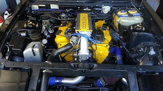
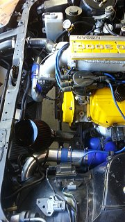

-
Gentlemen-
I have been through every Maxima plenum post and thread I could find.
I have interference between the Maxima plenum and the water neck, enough that the front of the plenum is about 1/8" - 3/16" from flush with the LIM.
My guess is that there's enough meat on the plenum to solve the problem with a grinder, but I figure someone else must have had this problem already. Grind away or…? -
Maybe try the ASCO delrin plenum spacer. It's 50 bucks or so but might give you the clearance you need. -
I have one of the phenolic intake spacers. Puts the whole plenum too high and into contact with the hood I was searching to see if other guys were using a spacer and not running into problems…
I was searching to see if other guys were using a spacer and not running into problems…
Edit: If you search for this, ASCO have been asked a couple of times if it works with a maxima intake and they seem to have dodged the question, lol. From what I tried so far the answer would be a very big maybe, if you cut out the furthest forward hood support and dropped the motor some. I am using Level Zero delrin mounts which are a tiny bit shorter than stock. -
You could go with lower mounts. Maybe go with a different water neck. I'm not sure honestly I've never messed with the Maxima plenum. -
Thanks for the suggestions my man. I'm going to take out the offending bit of hood support as that's pretty easy and consequence-free, if that doesn't do it I'll proooobably go the motor mount route.
Once I saw how much space you get for everything else with the max intake I don't want to give up, lol. -
Okay, for anyone searching in the future (maxima plenum clearance fitment water neck intake z31):
A 3/8" plenum spacer like ASCO sells will allow you to clear the water neck nicely. However, with the spacer, on a 1984 NA hood you will definitely need to cut out the furthest forward support in the center. This will clear but it will be REALLY close, depending on your motor mounts.
I do not know if other years have different bracing patterns.
If you do not have a spacer, you will need to do some very serious clearancing on the plenum and/or the water neck. Getting the spacer and cutting the hood support is much easier.
Also, if you are adding the new neck yourself, I suggest making it as short as you can possibly get away with. If you add more than three or so inches onto the front you will *not* be able to use the stock throttle cable with the throttle body in the stock alignment (with the throttle spring on the passenger side.) If you invert the throttle body so the spring is on the driver side the cable run is shorter but you will open up several cans of worms including clearing the throttle cable past the dizzy, the overall alingment of the throttle cable, and plugging in the TPS.
So, no, it's not bolt-on but it's *fairly* close. -
Good info man. Thanks for sharing. Like I said I myself haven't had any experience with them but this will help others for sure. -
huh, looking at the maxima upper coolant neck i can say twhree things
1. You should try the Maxi neck for clerance
2. The flange pattern is the same, i'd wager heavily on that
For Z31 foreward facing intakes, or ASCO fuel rail owners:
3. it's laid down enough it may make straight AN fuel rail fittings possible on the forward pass. side with minimal upper coolant line modification
Cool info, i'll have to grab one next i see it at the JY -
3096140007_large.jpg
Yellow is UIM to coolant neck flange
Blue is Fuel rail, looks like it has cross over at rear (right in pic) of engine -
Thanks for posting, but judging from that pic the coolant neck is likely to interfere with any intake piping. The spacer, plus cutting a hood brace if required, is a pretty cost-effective fix if you are already into relocated turbo territory (the main reason to do a Maxima intake.) -
Also, in case it hasn't been clearly stated anywhere else, if you are running a distributor in the stock location and you get a 'new' maxima intake and are modifying it yourself, you will also have to chop off and weld closed the EGR input on the driver's side right by the inlet.
So, to be 100 per cent clear, to do a maxima intake from scratch:
1) You *will* have to do some cutting and welding on the intake, for the inlet itself and at the very least to clearance the distributor, and you will need to get or make blockoff plates or do more welding.
2) You will probably need to buy a plenum spacer and cut out a little bit of hood bracing or very aggressively clearance both the intake and the z31 water neck. There is slightly less injector clearance under the Max intake so depending on your fuel and injector rail setup you may have a nasty surprise - 'stock' should be fine but anything taller could be an issue.
3) After that you *may* need to sort out the throttle cable and TPS harness depsnding on your individual circumstances.
None of these things are hard but unless you get one that's already cut and welded for a z31 you don't just slap on a maxima intake. -
-
I replaced the neck as seen in my pictures below.
In my setup I do not use a spacer, but I gutted my plenum and put a 10MM thick top plate on. The hood doesnt close with the fancy plenum finish. I cut the front support of the bonnet but I believe there could still be some rubbing. 

Copyright © 2006–. All rights reserved. Privacy Policy